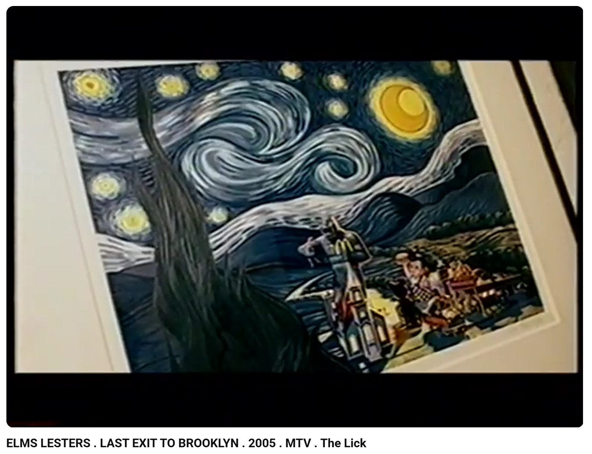
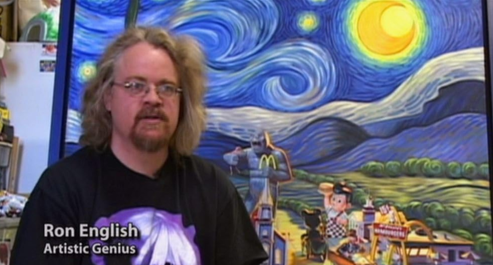
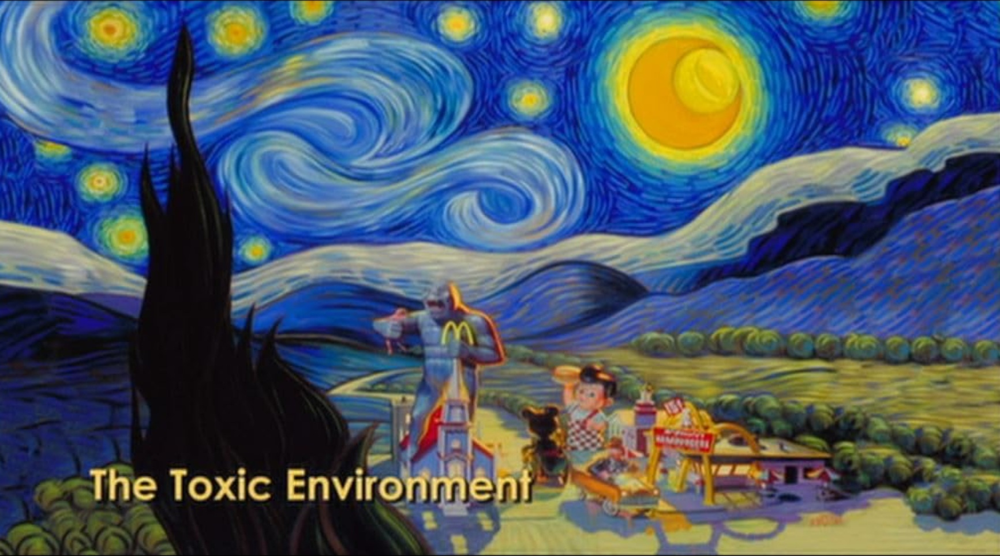
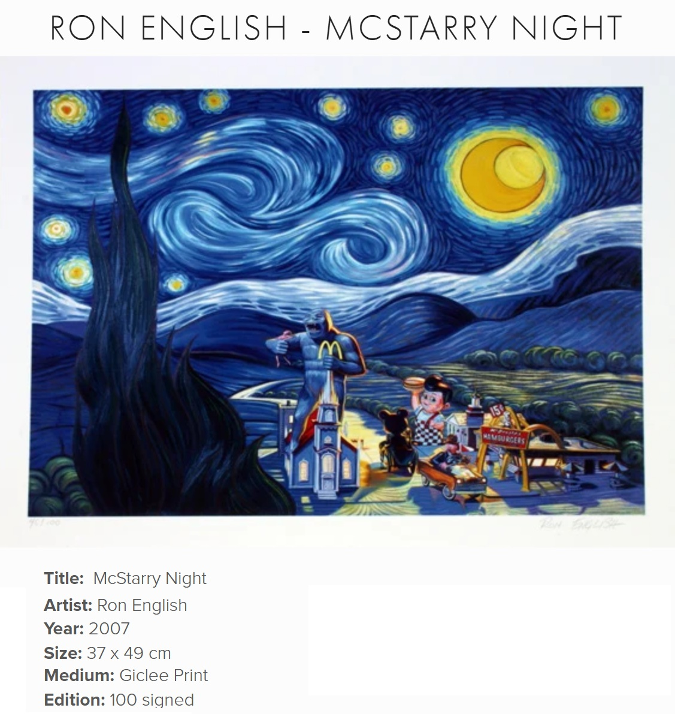

Notes
This work references Vincent van Gogh’s The Starry Night.
Prints after this painting appear in Elms Lesters Painting Rooms’ YouTube videos Last Exit to Brooklyn: New York's Counter Culture and Don't Do That.
This composition also appears as one of the images included in The McSupersized Portfolio, a portfolio of four giclée prints featuring images used in the film Super Size Me.
This composition was also adapted as the print McStarry Night.
This work appears in Morgan Spurlock’s documentary Super Size Me.
Ron's Personal Photo Archive

Ancillary Documentation
The following materials document visual source material associated with the composition, related print versions, video documentation, and the work’s appearance in film documentation.







Selected Online Circulation
Selected examples of the work’s online circulation, reproduction, or discussion. This list is not exhaustive; it is intended to document representative appearances of the image beyond formal exhibition and publication records.